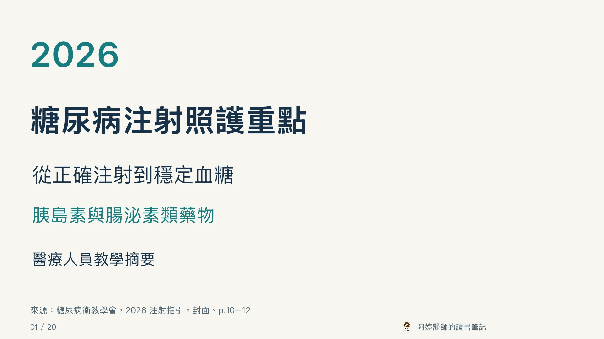

臨床教學 · 約 20 分鐘
糖尿病注射照護

隨時複習
簡報與講稿
PowerPoint 文字、表格與示意圖可編輯。長表已分頁。
若在 Facebook 或 Instagram 內無法下載，請用 Safari 或 Chrome 開啟。
完整講稿
來源、版權與閱讀提醒
主要來源：中華民國糖尿病衛教學會，《2026 臺灣糖尿病注射藥物注射指引》，2026 年 10 月。學會官方網站。
本教材為教學摘要改寫，非學會官方教材或勘誤。原書著作權歸原權利人。本站不提供原 PDF、掃描頁或原書圖片，不代表取得原書重製授權。
兒童較長針頭角度與保存期限的原文差異，見第 19 張。藥品與裝置操作以各產品最新仿單及個別臨床評估為準。
本站以系統字型呈現，未散布字型檔案。概念圖採原創排版，不是人體定位或解剖量測圖。